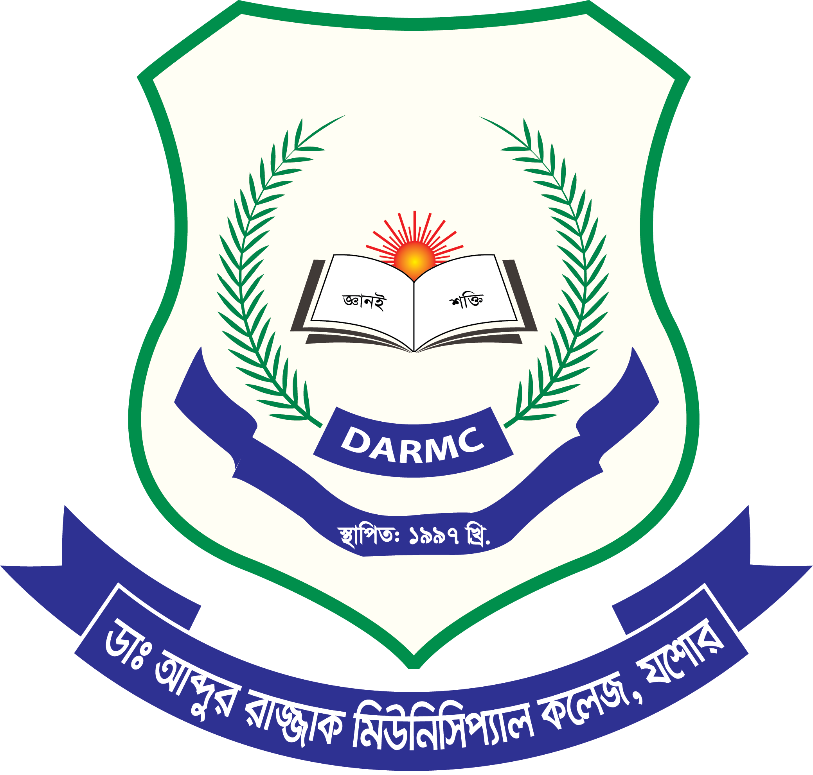

Md. Tipu Sultan
Front End Developer
| Home | About | Gallery | Contact |
|  |

|
School
I have started my secondary school named D.S.T Secondary School, Jamtala
at 2006
in Jamtala Bazar. I have got GPA 5 in SSC exam from this school in 2011.
College
I have started my college life from July, 2011. My college name is Dr.
Abdur Razzak Municipal College, Jashore
. My college life was very interesting. My favourite teacher SK Zahidur Rahman
is very dedicated and sincere teacher. I completed my college life at 2013. I appeared in HSC and got GPA 4.90. Md Enamul Haque, my mess life elder brother is my
favourite person till now. He helped me so much.
University
In 2015, I have started my University life. I admitted to "Institute of Science and Technology, Dhanmondi, Dhaka". This was another interesting life.In 2018, Chadpur Tour was my favourite tour in my life. Dr. Galib Hashmi is my favourite teacher. My best friend was Tarikul Islam Khan Maruf. He helped me in every sphere of my University life. In August, 2017 I have faced a major operation. Due to Covid-19 our 8thsemester Project has posponed and held at 19 January, 2020 which first date was 25 March, 2020. By the way, after a long time January 2021, my professional BSC in "Electronics and Communication Engineering" result has published. I have got 3.58 in 8thsemester and my average result of BSc Honor's is 3.23 (First Class) I am very happy to get this result.
Family
My name is Md. Tipu Sultan. I have only one younger brother named Md. Taz Uddin Dipu. He reads in Intermediate at "Dr. Abdur Razzak Municipal College, Jashore". He also got GPA 5 in SSC from "Angarpara Bahirampur Secondary School". My father name is Md. Alomgir Hossain. He is a Shopkeeper. My mother name is Mst. Nelufa Yesmin. She is a housewife and former teacher of Brac.
© 2015-2021. All rights reserved by Md Tipu Sultan.